Real-Time Direct Memory Access (RTDMA)#
Overview#
In this learning module, you will:
Gain a general understanding of what RTDMA is.
Understand common examples of where RTDMA is typically used.
Follow the flow of data through the RTDMA module.
Learn about memory protection within the RTDMA module.
Introduction#
The RTDMA provides a hardware method of transferring data between peripherals and/or memory without intervention from the CPU. It has the ability to free up CPU bandwidth and rearrange the data into a pattern for more streamlined processing in real time. The RTDMA requires a peripheral or software trigger to start a data transfer through independent channels that can be configured separately. Each channel contains its own independent Interrupt Controller interrupt to let the CPU know the progression of a RTDMA transfer. For multi core devices, each CPU has access to all RTDMA instances. Similar to the C28x Direct Memory Access module, this peripheral operates with extended capabilities.
Application of RTDMA#
Using the RTDMA is ideal when an application requires moving large amounts of data from an off-chip peripheral to on-chip memory. Specifically, the RTDMA can read data from the ADC result registers, transfer to or from memory blocks, and transfer to or from the various peripherals. It is capable of rearranging the data for optimal CPU processing such as binning and “ping-pong” buffering. Two RTDMA instances can operate in lock-step mode to not only ensure modular redundancy but also detect faults in the module required for security requirements.
Why use RTDMA?#
RTDMA is often selected because of its ease and ability to efficiently transfer large packets of data. Some other advantages are:
The system processor can focus on other operations while the RTDMA handles transfers.
In the case of multiple processes, the RTDMA is faster than the CPU because it does not require CPU participation for every byte transferred and interrupt handling, which can cause delay.
Multiple RTDMA channels work in parallel to improve system throughput.
With a general overview of RTDMA use established, we can get into what RTDMA is and how it works.
What is the RTDMA?#
How does the RTDMA work?#
A DMA transfer is started by a peripheral or software trigger. There are several independent DMA channels, where each channel can be configured individually and each DMA channel has its own unique Interrupt Controller interrupt for CPU servicing. All DMA channels operate the same way, except when a channel is configured at a higher priority than the other channels. At its most basic level the DMA is a state machine consisting of two nested loops and tightly coupled address control logic which gives the DMA the capability to rearrange the blocks of data during the transfer for post processing. When a DMA transfers is completed, the DMA can generate an interrupt.
Note
For a complete list of peripherals and their access types connected to the DMA bus refer to your device’s datasheet.
DMA Memory Blocks: To view the amount of global shared RAM the DMA has access to please refer to the functional block diagram of your device’s datasheet.
Basic Operation#
Type |
Description |
|---|---|
Word |
8, 16, 32, or 64-bit (configurable per DMA channel) |
Burst |
Consists of multiple bytes, smallest amount of data transferred at one time |
Burst Size |
Number of bytes per burst, specified by BURST_SIZE register, 8-bit value equal to burst size - 1, (maximum of 64 bytes/burst) |
Transfer |
Consists of multiple bursts |
Transfer Size |
Number of burst per transfer, specified by TRANSFER_SIZE register, 8-bit value equal to transfer size - 1, (value exceeds any practical requirements) |
Simplified State Machine Operation#
The DMA state machine at its most basic level is two nested loops. The most inner loop moves bytes based on the number of bursts programmed. Afterwards, the process is repeated again for the number of transfers performed.

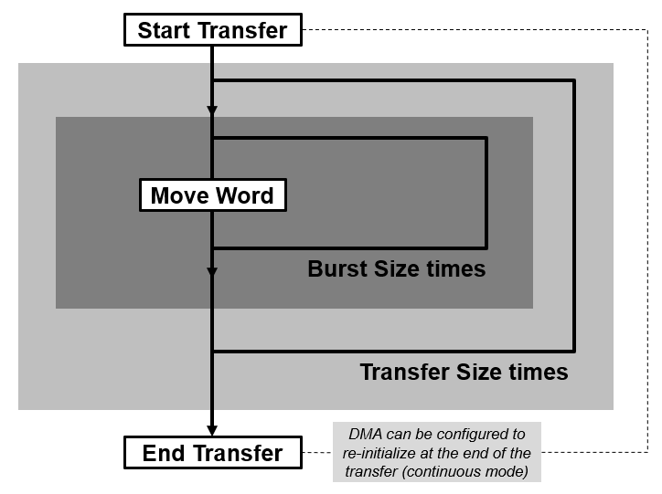
Figure 1#
Basic Address Control Registers#

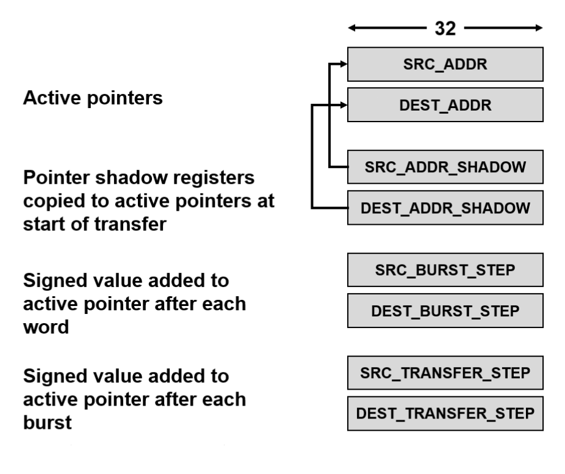
Figure 2#
Simplified State Machine#
The figure below illustrates the steps the DMA performs. Again, showing the two loops that occur, one to reach the number of bursts and another to reach the number of transfers.

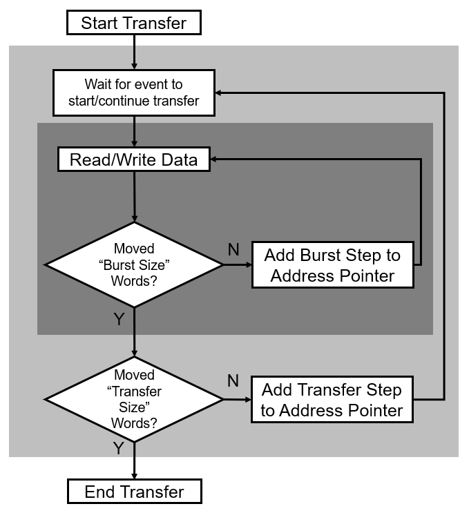
Figure 3#
RTDMA Interrupts#

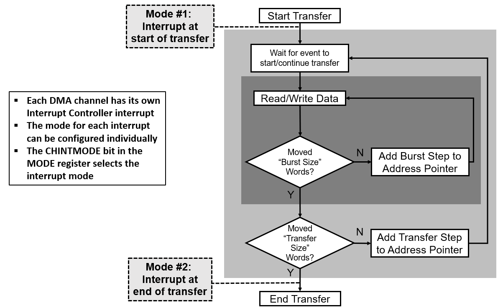
Figure 4#
DMA Examples#
Example 1: Simple Example#
Objective: Move 4 words from memory location 0xF000 to memory location 0x4000 and interrupt CPU at end of transfer.

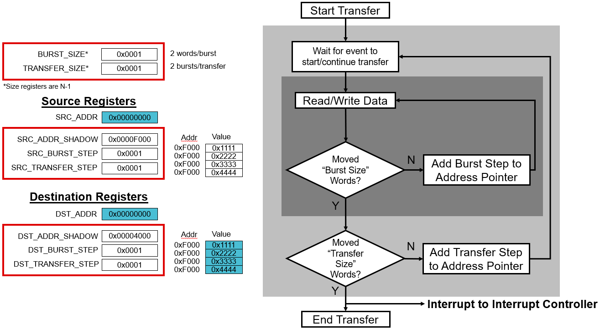
Figure 5#
This example could also have been done using 1 word/burst and 4 bursts/transfer, or 4 words/burst and 1 burst/transfer. This would affect Round-Robin progression, but not interrupts.
Example 2: Data Binning#
Objective: Bin 3 samples of 5 ADC channels, then interrupt the CPU.

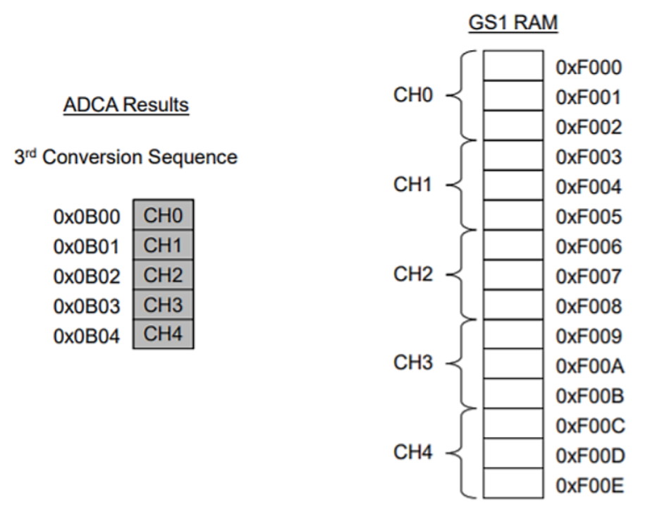
Figure 6#

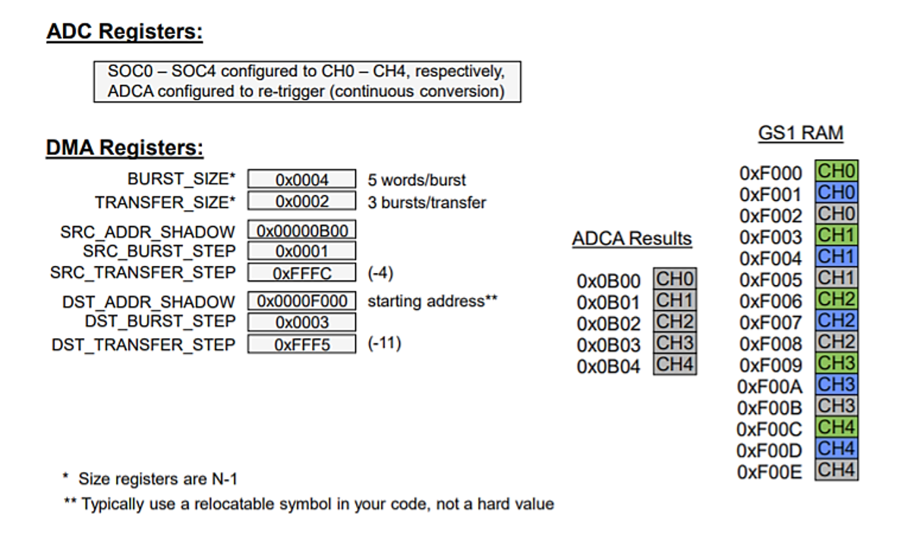
Figure 7#
Example 3: Ping-Pong Buffer#
Objective: Buffer ADC channel 0 ping-pong style, 50 samples per buffer.

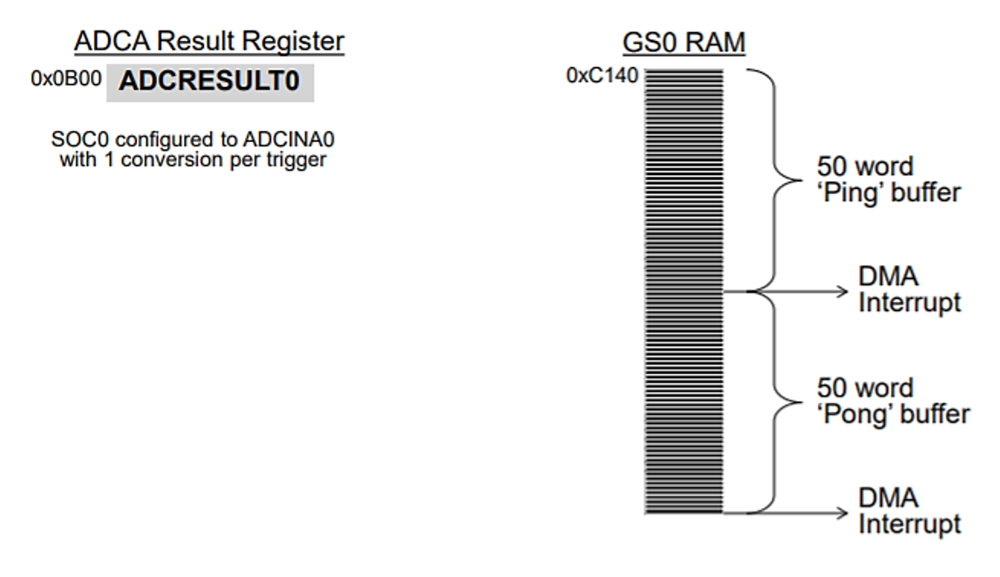
Figure 8#

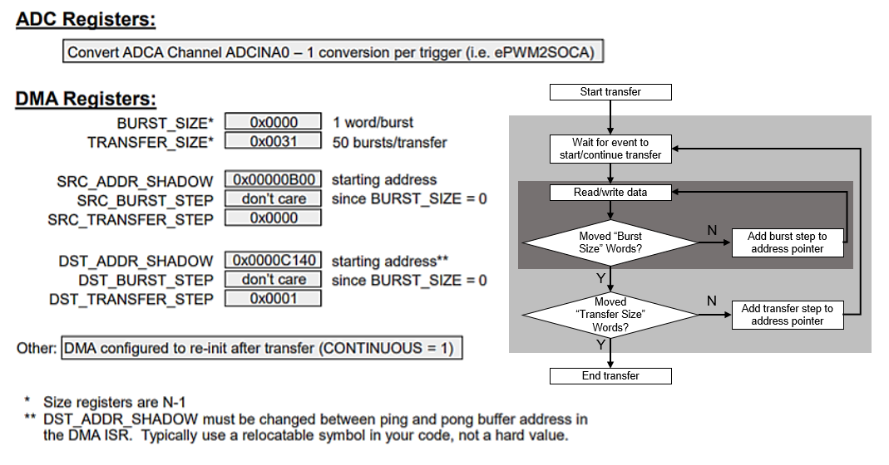
Figure 9#
Channel Priority Modes#
Round Robin Mode#
All channels have equal priority
After each enabled channel has transferred a burst of bytes, the next enabled channel is serviced in a round robin fashion

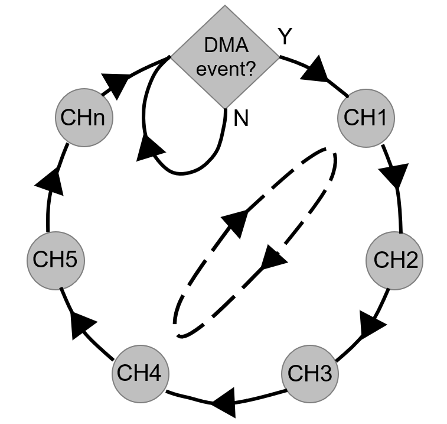
Figure 10#
Software-Configurable Priority of the Channels#
Same as Round Robin except any channel can be set a software configurable priority of 0 to 3.
All the channels are set to a default priority of 1.
Lowest priority number implies highest priority during arbitration. When the same priority number is assigned to multiple channels, the channel with lowest channel number assigned will win the arbitration.
Channel in High Priority Mode#
A channel configured with a priority of 0 can interrupt the RTDMA state machine.
If the channel trigger occurs, the current byte (not the complete burst) on any other channel is completed and execution is halted. This channel is serviced for a complete burst. When completed, execution returns to previous active channel.
This priority is intended primarily for the ADC, but can be used by any RTDMA event configured to trigger a channel with a priority of 0.
Priority Modes and the State Machine#

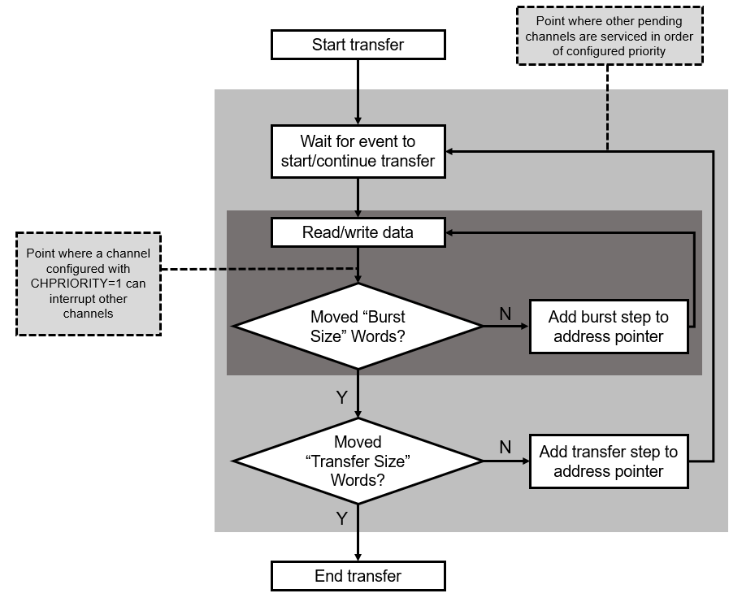
Figure 11#
RTDMA Throughput#
With no Read or Write Stall, it takes 4 cycles/word to complete the first read-write access and 1 cycle/word afterwards.
1 cycle delay to start each burst
1 cycle delay returning from channel high priority interrupt and in between burst of different channels
For example, a 32-bit transfer doubles throughput compared to 16-bit transfer
Example 1#
128 16-bit words from ADC to RAM (1 burst * (4 cycles/word * 1 words/burst)) + (7 bursts * (1 cycles/word + 16 words/burst)) + 16 = 139 cycles
Example 2#
64 32-bit words from ADC to RAM (1 burst * (4 cycles/word * 1 words/burst)) + (7 bursts * (1 cycles/word + 8 words/burst)) + 8 = 75 cycles
RTDMA MPU#
The RTDMA Memory Protection Unit (MPU) monitors the DMA read/write interface buses continuously and block access violations and trigger an interrupt, in case of violations.
When the MPU is enabled, any faults in the interface are communicated to the Error Signaling Module (ESM) where the errors are latched and RTDMA access is blocked:
MPU checks if an access to range defined by the MPU region does have necessary access permissions.
MPU checks if an address belongs to any region.
This system comprises of 16 regions, each containing registers for user-configurable attributes like start and end addresses for read/write accesses. Channel-to-MPU mapping is orthogonal, allowing each channel to be enabled in multiple MPU regions and vice versa.
In a secure system, MPU permissions are dictated by the Safety and Security Unit (SSU). Each channel can be associated with a specific AP region and hence can be configured by the corresponding SSU settings.
Note
Refer to the Error Signaling Module (ESM) and other Safety and Security modules for further information on configuration and usage.
Test Your Knowledge!#
Question 1
List the RTDMA interface ports.
Answer
64-bit Data Read (DR) and Data Write (DW) busses
Question 2
What are the channel trigger sources?
Answer
Internal channel to channel linking and external peripheral events
Question 3
Describe the errors generated by the RTDMA when the MPU is enabled.
Answer
Access is blocked and a fault is generated and triggered to the ESM when (1) an address does not belong to any region and (2) an access to a range defined by MPU region does not have necessary access permissions.
Summary#
The key takeaways from this learning module are:
RTDMA provides a hardware method of transferring data between peripherals and/or memory without CPU intervention.
RTDMA supports software configurable priority levels for each channel, including PRI=0, the highest priority.
RTDMA accesses are controlled by RTDMA-MPU regions that provide memory protection support and illegal accesses prevention.